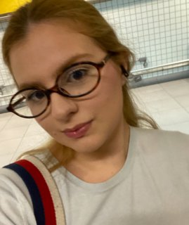

Pode pular qualquer carta. Ninguém é obrigado a responder.
Toque em “Sortear carta” para começar.
O que é o Aurora
O Aurora é uma proposta educativa supervisionada. Ela reúne escuta, acolhimento e orientação sobre a rede de apoio.
A ideia valoriza os vínculos, a autonomia e o bem-estar das pessoas idosas. O projeto nasceu do convívio com os avós de três estudantes de Medicina.
Quem faz o Aurora
Gabriela, Giovanna e Letícia, estudantes de Medicina do Centro de Excelência ENIAC, com orientação do Dr. Helder Ribeiro.

Articulação e logística

Materiais e escuta

Indicadores e registros
Como usar esta página
Na aba Cartas, sorteie uma pergunta e conte uma história com quem está perto de você. Pode pular qualquer carta.